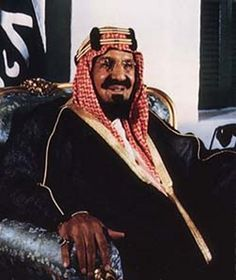

saudi kings

1923-1953
first king : Abdulaziz bin Abdul Rahman Al Saud
The Al Saud family had been a power in central Arabia for the previous 130 years. Under the influence and inspiration of Wahhabism, the Saudis had previously attempted to control much of the Arabian Peninsula in the form of the Emirate of Diriyah,
the First Saudi State, until its destruction by an Ottoman army in the Ottoman–Wahhabi War in the early nineteenth century.The Sauds ruled much of Arabia from 1780 to 1880, but, while Ibn Saud was still an infant, his family, driven out by their rivals, the Rashīds,
became penniless exiles in Kuwait. In 1901 Ibn Saud, then 21, set out from Kuwait with 40 camel men in a bold attempt to regain his family’s lands.Reaching their old family capital, Riyadh, the little group slipped into the town by night (January 1902).
The Rashīdī governor slept in the castle but came out every morning after dawn. Ibn Saud lay hidden until the governor emerged. Then, rushing forward with his men, he killed him and seized the castle. This exploit roused the former supporters of his dynasty. They
rallied to so magnetic a leader, and in two years of raids and skirmishes Ibn Saud reconquered half of central Arabia.Ibn Rashīd, however, appealed for help to the Turks, who sent troops. Ibn Saud suffered a defeat at their hands on June 15, 1904. But he was not
driven from central Arabia and soon reconstituted his forces, the years 1907 to 1912 being passed in desultory fighting. The Turks eventually left, unable to supply their troops.On 23 September 1932, Ibn Saud formally united his realm into the Kingdom of Saudi Arabia,
with himself as its king. He transferred his court to Murabba Palace from the Masmak Fort in 1938 and the palace remained his residence and the seat of government until his death in 1953.
Ibn Saud had to first eliminate the right of his own father in order to rule, and then distance and contain the ambitions of his five brothers, particularly his brother Muhammad, who had fought with him during the battles and conquests that gave birth to the state.